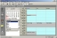
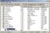

Easy to use information management and utility software for
business and home users.
Information Managers |

The Network Diary lets staff book meetings and share information from a central location. $295
ASCON manages your contact relationships and tracks the marketing and sales process. $99.95
 The Timer can have up to 32 Alarms, Timers and Stopwatches
running. $34.95
The Timer can have up to 32 Alarms, Timers and Stopwatches
running. $34.95
|
 The Diary manages all your appointments and tasks and can record your PC usage
$49.95
The Diary manages all your appointments and tasks and can record your PC usage
$49.95

Shopping List creates food shopping lists
FREE
Timer-PRO has all the features of the Timer, but also allows you to sequence multiple timers to manage complex tasks. $59.95
|
Utility Software |
 Autobackup-Pro automatically backs up your recently edited files $34.95
Autobackup-Pro automatically backs up your recently edited files $34.95
Dnote is a fast text editor
$34.95
|
 File Lister find, browse and view your files
$34.95
File Lister find, browse and view your files
$34.95
Get the Date Calculator for quick fast date calculations FREE
|
|
All our software will run on any PC with Windows
XP / 2003 / Vista / Win7
|
What do people think of our products?
"Thank you for all your support because that's what it's about with software."
Barr - US
"for a more stripped down and less hands-on approach, Autobackup is definitely the way to go."
Editor - Courier Mail, AU
"Using this powerful program you can instantly track down files of the same type - even if you cant remember what you called them."
Editor - PC Answers
Thanks. I have paid my money. I experimented with many trial copies of backup programs and found your AutoBackup to be ingenious yet simple. It suits my working style.
Richard - Australia
I love the diary software program we recently purchased from you
Steve, USA
The more I use the [timer] program, the more I see uses for it, and the more I like it.
Gerald D, New York, USA
"Easy, simple and efficient"
I frequently use this program [Date Calc]. It is always accurate, has a simple design and I
have never had a single problem with it, and I've used it for over 1 year.
Christi - US
Very usefull - The best of its kind!!!!
Ross, via Cnet
The Diary is an excellent way to keep your notes and appointments organized.
Tucows Editors
I looked at other timer programs and liked yours the best.
Trudy R. - California
When sifting through, and editing, large numbers of textfiles, Dnote is a great program to use!
YippeeNet Editor
|
|